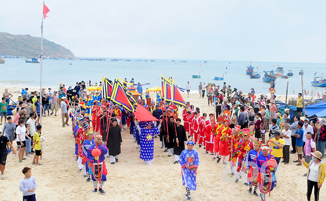
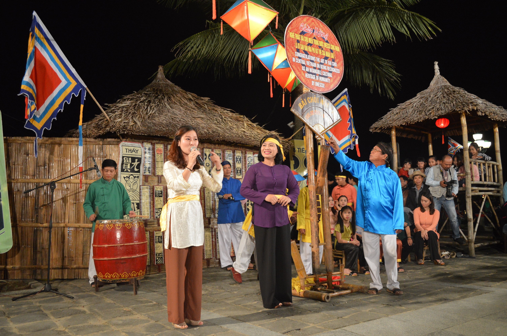
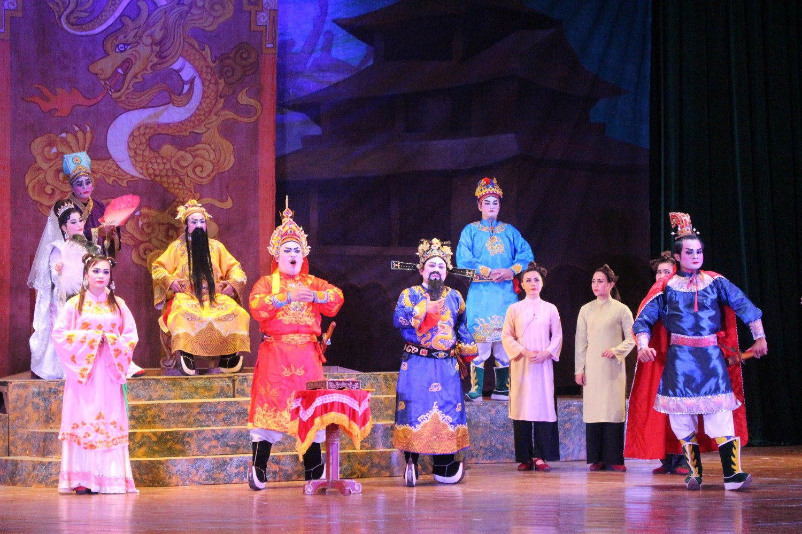
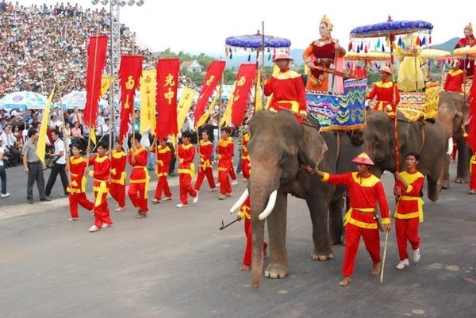
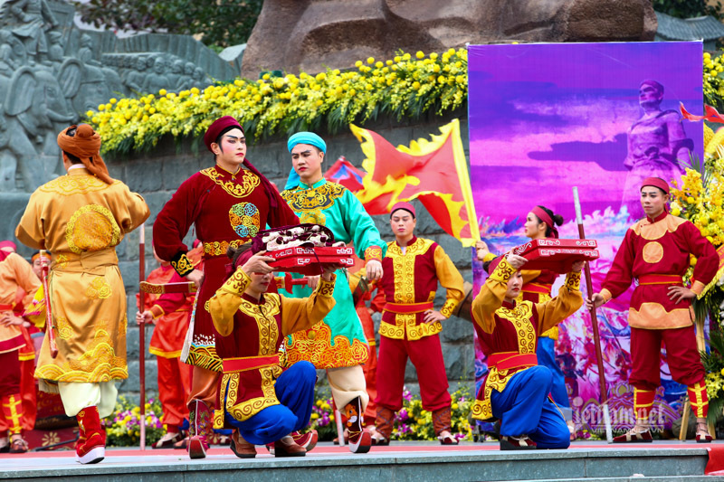
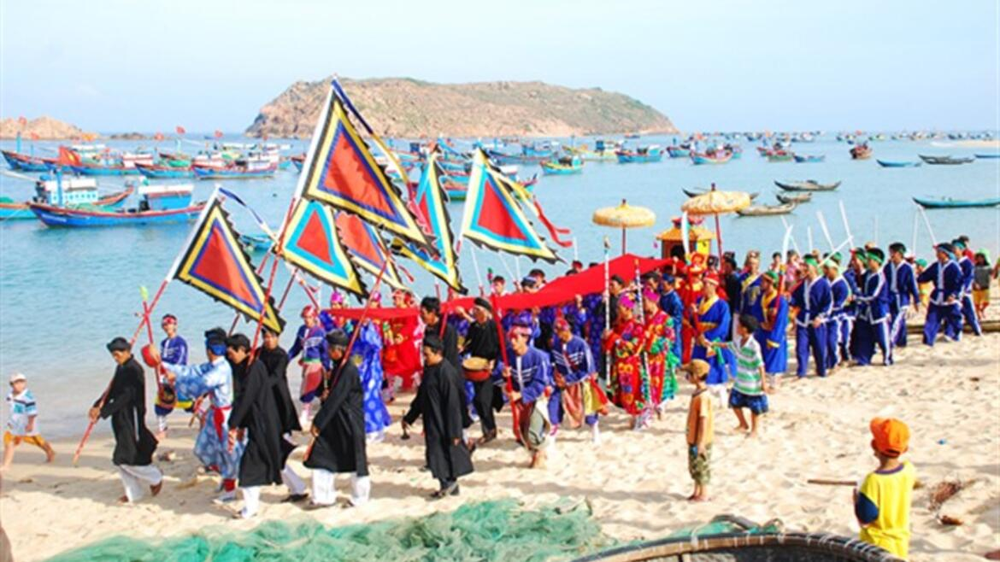
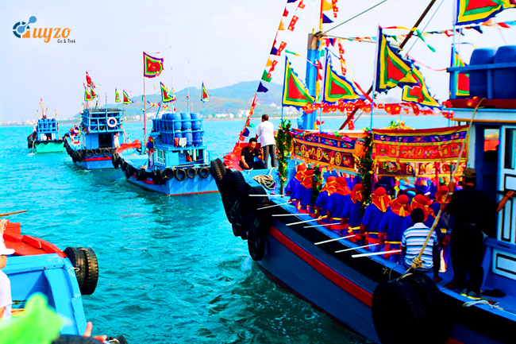

Bình Định là vùng đất giàu truyền thống văn hóa, nơi phong tục tập quán được hình thành và lưu giữ qua nhiều thế hệ. Trong đời sống sinh hoạt hằng ngày, người dân Bình Định luôn đề cao tình làng nghĩa xóm, sự gắn bó cộng đồng và tinh thần tương trợ lẫn nhau, tạo nên nét đẹp văn hóa đặc trưng của vùng đất miền Trung.
Phong tục lễ hội cũng là một phần không thể thiếu trong đời sống tinh thần của người dân Bình Định. Nhiều lễ hội truyền thống mang đậm bản sắc địa phương như Lễ hội Đống Đa – Tây Sơn, Lễ hội cầu ngư, lễ hội làng nghề… được tổ chức nhằm tưởng nhớ tiền nhân, cầu mong mưa thuận gió hòa và thể hiện tinh thần đoàn kết cộng đồng.
Đối với cư dân vùng biển, phong tục cầu ngư là nét sinh hoạt văn hóa tiêu biểu. Trước mỗi mùa ra khơi, ngư dân tổ chức lễ cúng trang nghiêm để cầu cho chuyến biển an toàn, đánh bắt thuận lợi. Phong tục này không chỉ mang ý nghĩa tâm linh mà còn phản ánh mối quan hệ gắn bó giữa con người và biển cả.
Trong giao tiếp và sinh hoạt thường ngày, người Bình Định nổi tiếng với tính cách chân chất, thẳng thắn, trọng nghĩa tình. Dù cuộc sống còn nhiều khó khăn, nhưng họ luôn giữ được sự mộc mạc, hiếu khách và tinh thần vượt khó – những giá trị đã trở thành phong tục sống bền vững theo thời gian.
Trong kho tàng nghệ thuật dân gian, hát Bài chòi là loại hình tiêu biểu nhất của Bình Định. Đây là sự kết hợp độc đáo giữa âm nhạc, thơ ca, diễn xướng và trò chơi dân gian, thường được tổ chức vào dịp lễ Tết. Hát Bài chòi không chỉ mang tính giải trí mà còn chuyển tải những giá trị nhân văn, giáo dục đạo lý và gắn kết cộng đồng. Năm 2017, Bài chòi Trung Bộ đã được UNESCO công nhận là Di sản văn hóa phi vật thể đại diện của nhân loại, góp phần khẳng định giá trị văn hóa của Bình Định nói riêng và Việt Nam nói chung.
Bên cạnh đó, nghệ thuật tuồng (hát bội) cũng phát triển mạnh tại Bình Định. Tuồng mang đậm tính sân khấu truyền thống, với lối diễn ước lệ, phục trang cầu kỳ và nội dung ca ngợi lòng trung nghĩa, tinh thần yêu nước. Tuồng Bình Định từng là loại hình nghệ thuật cung đình và dân gian phổ biến, góp phần làm phong phú đời sống văn hóa tinh thần của nhân dân.
Các lễ hội dân gian ở Bình Định thường gắn liền với lịch sử, tín ngưỡng và sinh hoạt cộng đồng. Tiêu biểu nhất là Lễ hội Đống Đa – Tây Sơn, được tổ chức hằng năm để tưởng nhớ công lao của Hoàng đế Quang Trung – Nguyễn Huệ và phong trào Tây Sơn. Lễ hội mang không khí trang nghiêm nhưng cũng rất sôi nổi, thể hiện niềm tự hào dân tộc và truyền thống yêu nước của người dân Bình Định.
 Ngoài ra, lễ hội cầu ngư của cư dân ven biển là nét sinh hoạt văn hóa đặc trưng, thể hiện niềm tin tâm linh và ước mong cuộc sống bình yên, mùa màng bội thu. Lễ hội thường diễn ra với nhiều nghi thức trang trọng kết hợp các hoạt động văn hóa – thể thao dân gian, tạo nên không khí gắn kết cộng đồng làng biển.
 Nghệ thuật truyền thống và lễ hội dân gian đã góp phần làm nên bản sắc văn hóa riêng của Bình Định, giúp gìn giữ ký ức lịch sử, nuôi dưỡng tâm hồn con người và truyền lại những giá trị tốt đẹp cho các thế hệ mai sau.